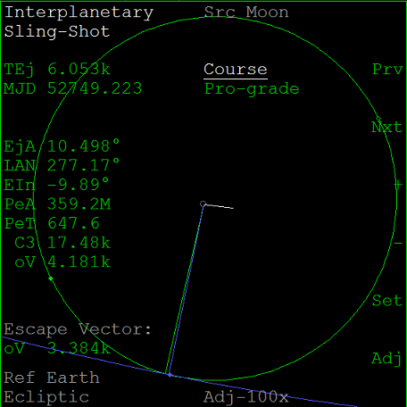
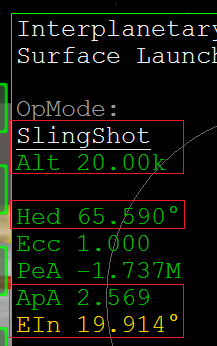
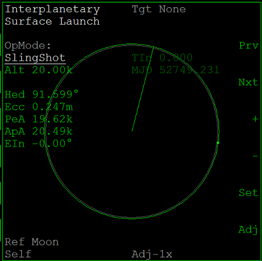
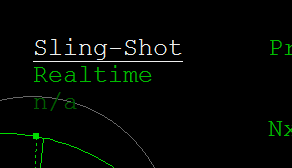
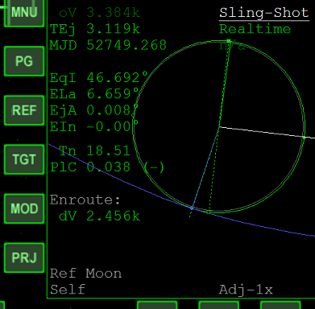

IMFD Part9 月を出発点にしたフライトを実行する
Part8で作成したフライトを実行して、月から火星に向かいます。
打ち上げのタイミングを待つ
Sling-Shotを見ながら、タイムワープで時間を進める。
TEjが6,000(6k)秒くらいになるまで待つ。※

※パーキング軌道を1周するのに必要な時間を目安にします。
打ち上げからパーキング軌道まで
Surface Launchを開く。
+を何度かクリックして、Course-ProgramをSlingShotに切り替える。
Altは20kmくらいにしておく。

Hedの方角に向かって飛ぶ。※
EInの数字が小さくなるように、左右に針路を修正する。
※月の自転は遅いので、真東（方位090）に向けて打ち上げる必要はありません。
ApAが20kmを超えたらエンジンを切って、通常の手順でパーキング軌道に乗せる。

遷移軌道に乗せる
打ち上げが終わったら、Orbit-Ejectを開く。
+を何度かクリックして、Higher OrbitをSling-Shotに切り替える。

グラフが見づらいので、PRJをクリックしてSelfにする。

必要があれば、NML+orNML-を使ってEInを小さくする。
終わったらABをクリックして、自動噴射を実行する。
ここから先は、Part4の内容とまったく同じです。